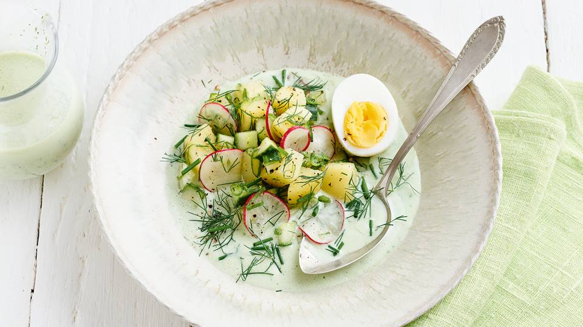

Okroschka
| 500ml Kefir |
| 250g Saure Sahne |
| 300ml Mineralwasser mit wenig Kohlensäure |
| 3 gekochte Kartoffeln |
| 3 gekochte Eier |
| 300 Gramm Fleischwurst |
| 3 Knoblauchzehe(n) |
| 1/2 Bund Radieschen |
| 1/2 Salatgurke |
| 2 ELOlivenöl |
| 2 große Ei(er) |
| 1 Prise Salz |
| halber Bund Schnittlauch |
| halber Bund Dill |
| weitere Kräuter nach wahl |
| Nach Geschmack 1 Esslöffel Zitronensaft |
| Nach Geschmack 2 Frühlingszwiebeln (mit Vorsicht!) |
Zubereitung
Für Okroschka kochst du zuerst Kartoffeln und Eier, schälst sie und schneidest alles in kleine Würfel. Danach würfelst du Fleischwurst und schneidest Radieschen sowie Gewürzgurken. Frühlingszwiebeln und Dill hackst du fein, damit sie ihren frischen Geschmack entfalten. Alles kommt zusammen in eine große Schüssel. Nun verrührst du Kefir mit Mineralwasser, bis eine leichte, cremige Flüssigkeit entsteht. Mit Salz, Pfeffer, Senf oder etwas Zitronensaft würzt du die Mischung nach deinem Geschmack. Zum Schluss gießt du die Flüssigkeit über die Zutaten, rührst alles gut durch und stellst die Suppe kalt. So hast du eine erfrischende, sommerliche Mahlzeit. 🥒✨
Rezept erstellt von